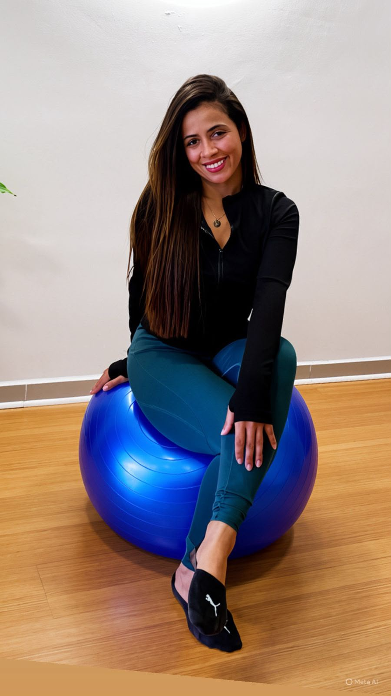

DR.Léia

Movimento, cuidado e bem-estar em cada etapa da sua vida. Atendimento personalizado para melhorar sua qualidade de vida, aliviar dores, fortalecer o corpo e promover mais saúde através do Pilates, fisioterapia e terapias integrativas.
Agendar avaliação ⭐Quem é a Dra. Léia?
Dra. Léia é fisioterapeuta e instrutora de Pilates, com experiência em Pilates e Yoga e uma abordagem individualizada, respeitando os objetivos, limitações e necessidades de cada pessoa.
Seu atendimento une conhecimento técnico, movimento consciente e cuidado humanizado, buscando não apenas tratar dores e limitações, mas também ajudar cada paciente a desenvolver mais força, mobilidade, equilíbrio e qualidade de vida.
Pilates personalizado para diferentes necessidades:
- 👵 Pilates para idosos
- 🤰 Pilates para gestantes
- 🦴 Pilates para escoliose
- 🏃 Pilates para corredores
- 🧘 Pilates para patologias da coluna
- 💪 Pilates para ombros
- 🦵 Pilates para joelhos
- 🦴 Pilates para quadril
- Pilates Solo
- Pilates Clássico
Cada aula é adaptada de acordo com a condição física, objetivos e necessidades individuais do aluno.
Cuidados que vão além do movimento.
Acupuntura: Técnica terapêutica que utiliza pontos específicos do corpo para auxiliar no alívio de dores, relaxamento e equilíbrio do organismo.
Massagem relaxante: Promove relaxamento físico e mental, ajudando a diminuir tensões musculares e proporcionar sensação de bem-estar.
Drenagem linfática: Técnica de movimentos suaves que auxilia a circulação linfática, podendo contribuir para redução de inchaço e sensação de peso corporal.
Drenagem linfática para gestantes: Realizada com técnicas e posicionamentos adaptados à gestação, proporcionando conforto e auxiliando no controle do inchaço.
Taping no pós-parto: Aplicação de bandagem funcional com objetivo de oferecer suporte e auxiliar em determinadas necessidades do período pós-parto, conforme avaliação individual.
Liberação miofascial: Técnica voltada para a redução de tensões e restrições dos tecidos, favorecendo mobilidade e conforto muscular.
Massagem modeladora: Massagem com movimentos mais intensos, utilizada como complemento em protocolos corporais, sempre respeitando as características e necessidades individuais.
Ventosoterapia: Técnica que utiliza ventosas para promover estímulos nos tecidos e auxiliar no relaxamento e na redução de tensões musculares.
“Cuidar do corpo é também cuidar de si. Cada paciente que passa por aqui faz parte da nossa história.” 💚
📍 Local de atendimento: a domicílio
🕐 Horários: 09:00 às 14:00
🕐 Sábados: 09:00 às 13:00
Fazer Agendamento Visite meu Instagram